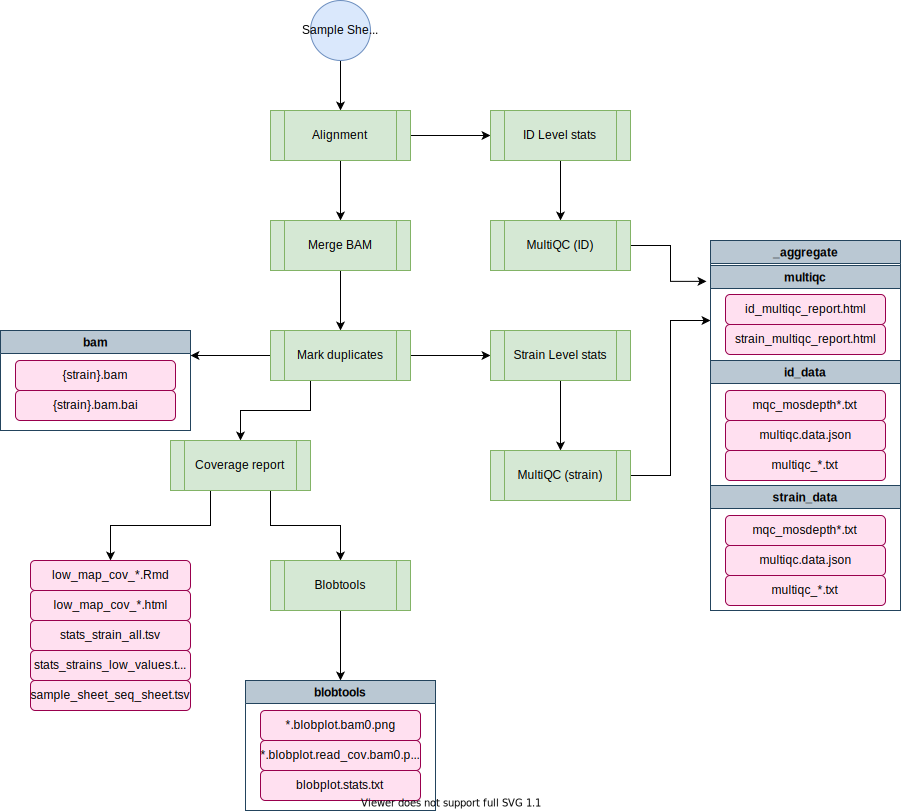
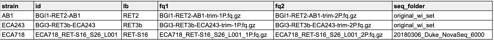

alignment-nf¶
The alignment-nf pipeline performs alignment for wild isolate sequence data at the strain level, and outputs BAMs and related information. Those BAMs can be used for downstream analysis including variant calling, concordance analysis, wi-gatk-nf (variant calling) and other analyses.
This page details how to run the pipeline and how to add new wild isolate sequencing data.
Note
Historically, sequence processing was performed at the isotype level. We are still interested in filtering strains used in analysis at the isotype level, but alignment and variant calling are now performed at the strain level rather than at the isotype level.
Pipeline overview¶
▗▖ ▝▜ ▝ ▗ ▗▖ ▖▗▄▄▖
▐▌ ▐ ▗▄ ▄▄ ▗▗▖ ▗▄▄ ▄▖ ▗▗▖ ▗▟▄ ▐▚ ▌▐
▌▐ ▐ ▐ ▐▘▜ ▐▘▐ ▐▐▐ ▐▘▐ ▐▘▐ ▐ ▐▐▖▌▐▄▄▖
▙▟ ▐ ▐ ▐ ▐ ▐ ▐ ▐▐▐ ▐▀▀ ▐ ▐ ▐ ▀▘ ▐ ▌▌▐
▐ ▌ ▝▄ ▗▟▄ ▝▙▜ ▐ ▐ ▐▐▐ ▝▙▞ ▐ ▐ ▝▄ ▐ ▐▌▐
▖▐
▝▘
parameters description Set/Default
========== =========== ========================
--debug Use --debug to indicate debug mode null
--sample_sheet See test_data/sample_sheet for example null
--species Species to map: 'ce', 'cb' or 'ct' null
--fq_prefix Path to fastq if not in sample_sheet /vast/eande106/data/{species}/WI/fastq/dna/
--kmers Whether to count kmers false
--reference genome.fasta.gz to use in place of default defaults for c.e, c.b, and c.t
--output Output folder name. alignment-{date}
HELP: http://andersenlab.org/dry-guide/pipelines/pipeline-alignment/

Software requirements¶
- Nextflow v23+ (see the dry guide on Nextflow here or the Nextflow documentation here). On Rockfish, you can access this version by loading the
nf23_envconda environment prior to running the pipeline command:
module load python/anaconda
source activate /data/eande106/software/conda_envs/nf23_env
Relevant Docker Images¶
Note: Before 20220301, this pipeline was run using existing conda environments on QUEST. However, these have since been migrated to docker imgaes to allow for better control and reproducibility across platforms. If you need to access the conda version, you can always run an old commit with nextflow run andersenlab/alignment-nf -r 20220216-Release
andersenlab/alignment(link): Docker image is created within this pipeline using GitHub actions. Whenever a change is made toenv/align.Dockerfileor.github/workflows/build_docker.ymlGitHub actions will create a new docker image and push if successfulandersenlab/blobtools(link): Docker image is created manually, code can be found in the dockerfile repo.andersenlab/multiqc(link): Docker image is created within the trim-fq-nf pipeline using GitHub actions. Whenever a change is made toenv/multiqc.Dockerfileor.github/workflows/build_multiqc_docker.ymlGitHub actions will create a new docker image and push if successful
Make sure that you add the following code to your ~/.bash_profile. This line makes sure that any singularity images you download will go to a shared location on /vast/eande106 for other users to take advantage of (without them also having to download the same image).
# add singularity cache
export SINGULARITY_CACHEDIR='/vast/eande106/singularity/'
Note
If you need to work with the docker container, you will need to create an interactive session as singularity can't be run on Rockfish login nodes.
interact -n1 -pexpress
module load singularity
singularity shell [--bind local_dir:container_dir] /vast/eande106/<image_name>
Note
mosdepth is used to calculate coverage. mosdepth is available on Linux machines, but not on Mac OSX. That is why the conda environment for the coverage process is specified as conda { System.properties['os.name'] != "Mac OS X" ? 'bioconda::mosdepth=0.2.6' : "" }. This snippet allows mosdepth to run off the executable present in the bin folder locally on Mac OSX, or use the conda-based installation when on Linux.
Usage¶
Testing on Rockfish¶
This command uses a test dataset
nextflow run -latest andersenlab/alignment-nf --debug
Running on Rockfish¶
You should run this in a screen or tmux session.
Note: if you are having issues running Nextflow or need reminders, check out the Nextflow page.
nextflow run -latest andersenlab/alignment-nf --sample_sheet <path_to_sample_sheet> --species c_elegans
Parameters¶
-profile¶
There are three configuration profiles for this pipeline.
rockfish- Used for running on Rockfish (default).quest- Used for running on Quest.local- Used for local development.
Note
If you forget to add a -profile, the rockfish profile will be chosen as default
--sample_sheet¶
The sample sheet for alignment is the output from the trim-fq-nf pipeline. The sample sheet must be tsv formatted, is the full path to the sample sheet (even if it is in your current directory), and has the following columns:
- strain - the name of the strain. Multiple sequencing runs of the same strain are merged together.
- id - A unique ID for each sequencing run. This must be unique for every single pair of FASTQs.
- lb - A library ID. This should uniquely identify a DNA sequencing library.
- fq1 - The path to FASTQ1
- fq2 - The path to FASTQ2

Note
Remember that in --debug mode the pipeline will use the sample sheet located in test_data/sample_sheet.tsv.
The library column is a useful tool for identifying errors by variant callers. For example, if the same library is sequenced twice, and a variant is only observed in one sequencing run then that variant may be excluded as a technical / PCR artifact depending on the variant caller being used.
Important
The alignment pipeline will merge multiple sequencing runs of the same strain into a single bam. However, summary output is provided at both the strain and id level. In this way, if there is a poor sequencing run it can be identified and removed from a collection of sequencing runs belonging to a strain. For this reason, it is important that each id be unique and not just the strain name
Note
The sample sheet is a critical tool. It allows us to associated metadata with each sequencing run (e.g. isotype, reference strain, id, library). It also allows us to quickly verify that all results have been output. It is much easier than working with a list of files!
--debug (optional)¶
You should use --debug for testing/debugging purposes. This will run the debug test set (located in the test_data folder) using your specified configuration profile (e.g. rockfish / quest / local).
For example:
nextflow run -latest andersenlab/alignment-nf --debug -resume
Using --debug will automatically set the sample sheet to test_data/sample_sheet.tsv
--species (optional)¶
Defaults to "c_elegans", change to "c_briggsae" or "c_tropicalis" to select correct reference file. If species == "c_elegans", a check will be run for the npr-1 allele. Note: this process used to happen later in concordance-nf, however it was moved up to alignment-nf to avoid having to rerun the long wi-gatk process if an incorrect strain is included.
--fq_prefix (optional)¶
Within a sample sheet you may specify the locations of FASTQs using an absolute directory or a relative directory. If you want to use a relative directory, you should use the --fq_prefix to set the path that should be prefixed to each FASTQ.
Note
Previously, this option was --fqs_file_prefix
--kmers (optional)¶
default = false
Toggles kmer-analysis
--reference (optional)¶
A fasta reference indexed with BWA. WS245 is packaged with the pipeline for convenience when testing or running locally.
On Rockfish, the default references are here:
c_elegans: /vast/eande106/data/c_elegans/genomes/PRJNA13758/WS283/c_elegans.PRJNA13758.WS283.genome.fa.gz
c_briggsae: /vast/eande106/data/c_briggsae/genomes/QX1410_nanopore/Feb2020/c_briggsae.QX1410_nanopore.Feb2020.genome.fa.gz
c_tropicalis: /vast/eande106/data/c_tropicalis/genomes/NIC58_nanopore/June2021/c_tropicalis.NIC58_nanopore.June2021.genome.fa.gz
Note
A different --project and --wsbuild can be used with the --species parameter to generate the path to other reference genomes such as:
nextflow run -latest andersenlab/alignment-nf --species c_elegans --project PRJNA13758 --wsbuild WS280
--ncbi (optional)¶
Default - /vast/eande106/data/other/ncbi_blast_db/
Path to the NCBI blast database used for blobtool analysis. Should not need to change.
--blob (optional)¶
Defaults to true. Change to false if you don't need to run blobtool analysis on low coverage strains. This step can take a while, so if you don't need it you might want to exclude it.
--output (optional)¶
Default - alignment-YYYYMMDD
A directory in which to output results. If you have set --debug, the default output directory will be alignment-YYYYMMDD-debug.
Output¶
├── _aggregate
│ ├── kmers.tsv
│ └── multiqc
│ ├── strain_data/
│ │ ├── mqc_mosdepth-coverage-dist-id_1.txt
│ │ ├── mqc_mosdepth-coverage-per-contig_1.txt
│ │ ├── mqc_mosdepth-coverage-plot-id_1.txt
│ │ ├── mqc_picard_deduplication_1.txt
│ │ ├── mqc_samtools-idxstats-mapped-reads-plot_Counts.txt
│ │ ├── mqc_samtools-idxstats-mapped-reads-plot_Normalised_Counts.txt
│ │ ├── mqc_samtools_alignment_plot_1.txt
│ │ ├── multiqc.log
│ │ ├── multiqc_data.json
│ │ ├── multiqc_general_stats.txt
│ │ ├── multiqc_picard_dups.txt
│ │ ├── multiqc_qualimap_bamqc_genome_results.txt
│ │ ├── multiqc_samtools_flagstat.txt
│ │ ├── multiqc_samtools_idxstats.txt
│ │ ├── multiqc_samtools_stats.txt
│ │ └── multiqc_sources.txt
│ ├── strain_multiqc_report.html
│ ├── id_data/
│ │ └──... (same as strain_data/)
│ └── id_multiqc_report.html
├── bam
│ ├── [strain].bam
│ └── [strain].bam.bai
├── blobtools
│ ├── {strain}.*.blobplot.bam0.png
│ ├── {strain}.*.blobplot.read_cov.bam0.png
│ └── {strain}.*.blobplot.stats.txt
├── software_versions.txt
├── sample_sheet.tsv
├── strain_summary.tsv
├── stats_strain_all.tsv
├── stats_strains_with_low_values.tsv
├── sample_sheet_for_seq_sheet.tsv
├── sample_sheet_for_seq_sheet_ALL.tsv
├── low_map_cov_for_seq_sheet.Rmd
├── low_map_cov_for_seq_sheet.html
└── summary.txt
Most files should be obvious. A few are detailed below.
- software_versions.txt - Outputs the software versions used for every process (step) of the pipeline.
- summary.txt - Outputs a summary of the parameters used.
- sample_sheet.tsv - The sample sheet (input file) that was used to produce the alignment directory.
- strain_summary.tsv - A summary of all strains and bams in the alignment directory.
- aggregate - Stores data that has been aggregated across all strains or sequencing IDs.
- coverage - Contains coverage data at the strain or id level, presented in a variety of ways.
- low_map_cov_for_seq_sheet.(Rmd/html) - Report showing low coverage or problematic strains to remove.
- stats_strain_all.tsv - contains stats for all strains, with all replicates combined
- stats_strains_with_low_values.tsv - contains stats for strains with either (1) low number of reads, (2) low mapping rate, and/or (3) low coverage
- sample_sheet_for_seq_sheet.tsv - sample sheet to be added to google sheet, filtered to remove low coverage strains
- sample_sheet_for_seq_sheet_ALL.tsv - sample sheet to be added to google sheet, contains all strains (use this one)
- blobplot/ - contains plots for low coverage strains to see if they show contamination issues and if they should be resequenced.
- npr1_allele_strain.tsv - if species == c_elegans, this file will be output to show problematic strains that contain the N2 npr-1 allele and should be manually checked.
Important
If a new strain is flagged in the npr1_allele_strain.tsv file, tell Erik, Robyn, and the wild isolate team ASAP so they can address the issue. This strain will likely be removed from further analysis.
Data storage¶
Cleanup¶
Once the alignment-nf pipeline has completed successfully and you have removed low coverage strains (see pipeline overview), all BAM files can be moved to /vast/eande106/data/{species}/WI/alignments/ prior to variant calling.
Note
Low coverage or otherwise problematic BAM files can be moved to /vast/eande106/data/{species}/WI/alignments/_bam_not_for_cendr/. Make sure to update the _README.md file in this folder with the reason each BAM was moved here. This will help remind people which files might be used again in the future.
Archive¶
The following sections have been integrated into other code that no longer needs to be run manually, but I am keeping the documentation here in case we need to go back to it. It is important to always check that the sample sheet is generated appropriately. If there are errors in teh sample sheet, one can be constructed manually using the following code:
construct_sample_sheet.sh¶
The scripts/construct_sample_sheet.sh script generates the WI_sample_sheet.tsv file.
Warning
The WI_sample_sheet.tsv file should never be generated and/or edited by hand. It should only be generated using the scripts/construct_sample_sheet.tsv script.
The construct_sample_sheet.sh script does a few things.
(1) Parses FASTQ Filenames
Unfortunately, no two sequencing centers are alike and they use different formats for naming sequencing files. For example:
ECA768_RET-S11_S79_L001_2P.fq.gz [strain]_[lib_lib#]_[sample_#]_[lane]_[read].fq.gz
XZ1734_S573_L007_2P.fq.gz [strain]_[sample_#]_[lane]_[read].fq.gz
In some cases they even changed formats over time!
The script parses the FASTQ filenames from different sequencing centers, extracting the strain name, and a unique ID. Note that the library and unique sequencing run ID (id) are named somewhat arbitrarily. The most imporant aspect of these columns is that any DNA library that has been sequenced multiple times possess the same library, and that every pair of FASTQs possess a unique sequencing ID.
Consider the following (fake) example:
| strain | isotype | reference_strain | id | library |
|---|---|---|---|---|
| AB1 | AB1 | TRUE | BGI2-RET2-AB1 | RET2 |
| AB1 | AB1 | TRUE | BGI2-RET3-AB1 | RET3 |
| AB4 | CB4858 | FALSE | BGI1-RET2-AB4 | RET2 |
| AB4 | CB4858 | FALSE | BGI2-RET2-AB4 | RET2 |
AB1 was sequenced twice, however two different DNA libraries were produced for each sequencing run (RET2 and RET3). AB4 was also sequenced twice, but both sequencing runs were of the same DNA library (called RET2). Note that the id column is always unique across all sequencing runs.
If you look at the WI_sample_sheet.tsv in more detail you will observe that the id and library columns are not consistantly named. This is not ideal, but it works. The inconsistancy does not affect analysis, and exists because the filenames are not consistant, but unique library and sequencing run IDs must be derived from them.
(2) Clean up strain names
The second thing the construct_sample_sheet.sh script does is that it replaces shorthand strain names or innapropriately named strains with the 3-letter system. For example, N2Baer is renamed to ECA254.
(3) Integrate metadata
The C. elegans WI Strain Info google spreadsheet is a master spreadlist containing every strain, reference_strain, and isotype for C. elegans wild isolates. The script downloads this dataset and uses it to integrate the isotype and reference strain into the sample sheet.
Adding new sequencing datasets¶
Sequencing data should be added to QUEST and processed through the trimming pipeline before being added to WI_sample_sheet.tsv. Before proceeding, be sure to read pipeline-trimming
To add new sequencing datasets you will need to devise a strategy for extracting the strain name, a unique ID, and sequencing library from the FASTQ filenames. This may be the same as a past dataset, in which case you can append the sequencing run folder name to the list with that format. Alternatively, you may need to create a custom set of bash commands for generating the rows corresponding to each FASTQ pair.
Here is an example from the construct_sample_sheet.sh script.
#===================================#
# BGI-20161012-ECA23 #
#===================================#
out=`mktemp`
seq_folder=BGI-20161012-ECA23
>&2 echo ${seq_folder}
prefix=${fastq_dir}/WI/dna/processed/$seq_folder
for i in `ls -1 $prefix/*1P.fq.gz`; do
bname=`basename ${i}`;
barcode=`zcat ${i} | grep '@' | cut -f 10 -d ':' | sed 's/_//g' | head -n 100 | uniq -c | sort -k 1,1n | cut -c 9-100 | tail -n 1`
echo -e "${bname}\t${i}\t${barcode}" >> ${out}
done;
cat ${out} |\
awk -v prefix=${prefix} -v seq_folder=${seq_folder} '{
fq1 = $1;
fq2 = $1;
LB = $3;
gsub("N", "", LB);
gsub("1P.fq.gz", "2P.fq.gz", fq2);
ID = $1;
gsub("_1P.fq.gz", "", ID);
split(ID, a, "[-_]")
SM=a[2];
print SM "\t" ID "\t" LB "\t" prefix "/" fq1 "\t" prefix "/" fq2 "\t" seq_folder;
}' >> ${fq_sheet}
Notes on this snippet:
SM=strain,LB=library, andID=idin the final output file.- The sequencing run is listed in the comment box at the top.
- Barcodes are extracted from each FASTQ in the first forloop. These are used to define the
library. - The
idis defined using the basename of the file. - A final column corresponding to the
seq_folderis always added.